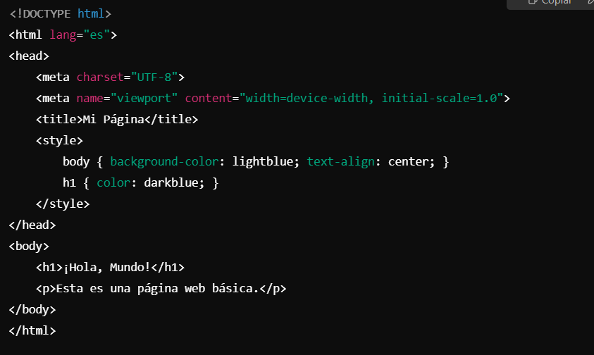

¿Qué es CSS?
CSS (Cascading Style Sheets) es un lenguaje de hojas de estilo utilizado para definir la presentación de un documento HTML o XML. Con CSS, puedes controlar el diseño, el color, las fuentes y la disposición de los elementos en una página web.
Historia de CSS
CSS fue creado por Håkon Wium Lie en 1994 mientras trabajaba en Netscape Communications. Fue estandarizado por el W3C (World Wide Web Consortium) en 1996 y ha evolucionado en varias versiones, siendo la más reciente CSS3, que ofrece muchas funcionalidades avanzadas para el diseño web.
¿Para qué sirve CSS?
CSS se utiliza para:
- Controlar el diseño visual de las páginas web.
- Definir colores, fuentes, márgenes y espaciado.
- Crear diseños responsivos que se adaptan a diferentes dispositivos.
- Aplicar efectos visuales como transiciones y animaciones.
¿Cómo funciona CSS?
CSS trabaja al aplicar reglas de estilo a los elementos HTML. Estas reglas pueden escribirse de tres maneras:
- Estilo en línea: Se aplica directamente en los elementos HTML mediante el atributo
style.
- Estilo interno: Se define dentro de la etiqueta
<style> en el encabezado del documento HTML.
- Estilo externo: Se define en un archivo CSS separado, que luego se vincula a HTML mediante la etiqueta
<link>.
Un ejemplo básico de CSS sería:
<style>
body {
background-color: #f0f0f0;
font-family: Arial, sans-serif;
}
h1 {
color: #333;
}
</style>
La base del Css:
Nota: Como tal Css no tiene una base solida, es conjunto con el HTML.

¿Qué se necesita para programar en CSS?
Para trabajar con CSS, necesitas:
- Editor de texto: Puedes usar editores como Visual Studio Code, Sublime Text, o Atom.
- Un archivo HTML: Para enlazar tu archivo CSS y aplicar los estilos.
- Navegador web: Para previsualizar cómo se aplican los estilos, como Chrome o Firefox.
Lenguajes que complementan CSS
CSS se combina con otros lenguajes para enriquecer la creación de sitios web:
- HTML: Se utiliza para estructurar el contenido de las páginas web, mientras que CSS se encarga de su apariencia.
- JavaScript: Permite añadir interactividad y dinamismo a las páginas, complementando a CSS en la creación de interfaces de usuario.
- Sass y Less: Preprocesadores de CSS que añaden características como variables y funciones para simplificar el código.
- Frameworks como Bootstrap: Utilizan CSS para facilitar la creación de diseños responsivos y consistentes.
Ventajas de CSS
- Facilidad de uso: CSS es fácil de aprender y aplicar para diseñar el estilo visual de las páginas web.
- Separación de contenido y diseño: Permite mantener el HTML limpio y organizado, separando la estructura del contenido del estilo visual.
- Flexibilidad: Ofrece una gran variedad de propiedades para controlar el diseño de elementos, como colores, fuentes, márgenes, y más.
- Responsive design: Con CSS, puedes crear diseños que se adaptan automáticamente a diferentes tamaños de pantalla (móviles, tablets, computadoras).
- Compatibilidad: Es ampliamente compatible con todos los navegadores modernos y versiones anteriores.
Desventajas de CSS
- Complejidad en diseños avanzados: Para diseños muy complejos, CSS puede volverse difícil de gestionar sin el uso de herramientas adicionales.
- Compatibilidad entre navegadores: Aunque es compatible con la mayoría, puede haber ligeras diferencias de comportamiento entre navegadores.
- Limitaciones con animaciones: Aunque CSS soporta animaciones, para animaciones más complejas o interactivas es necesario usar JavaScript.
- Depuración compleja: A veces puede ser difícil identificar por qué un estilo no se aplica correctamente debido a la cascada o especificidad de los selectores.
Ventajas de CSS
- Separación de contenido y diseño: Permite mantener el HTML limpio y enfocado en la estructura, mientras CSS maneja el estilo y el diseño.
- Reutilización de estilos: Un solo archivo CSS puede aplicarse a múltiples páginas, facilitando el mantenimiento y la coherencia del diseño.
- Personalización y control: Ofrece gran flexibilidad para personalizar la apariencia mediante selectores, pseudo-clases y variables.
- Compatibilidad con dispositivos: Media queries permiten adaptar el diseño a diferentes tamaños de pantalla y dispositivos.
- Mejor rendimiento: Archivos CSS externos permiten la carga y el almacenamiento en caché eficiente, mejorando la velocidad de las páginas.
Desventajas de CSS
- Compatibilidad entre navegadores: Algunas propiedades pueden comportarse de manera diferente según el navegador, complicando el desarrollo.
- Especificidad y cascada: La herencia y la especificidad pueden causar conflictos difíciles de depurar en estilos complejos.
- Falta de funciones avanzadas: Antes de preprocesadores como Sass, CSS carecía de variables y funciones lógicas.
- Curva de aprendizaje con layouts avanzados: Técnicas como Grid y Flexbox pueden ser confusas para principiantes.
Conclusión
CSS es esencial para darle estilo y formato a las páginas web, y es uno de los pilares fundamentales del desarrollo web. Aprender a utilizar CSS, junto con HTML y JavaScript, es clave para crear sitios web modernos y atractivos.